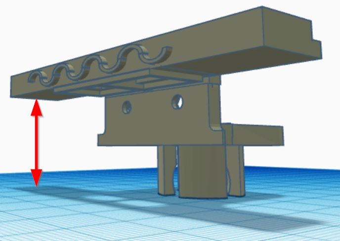
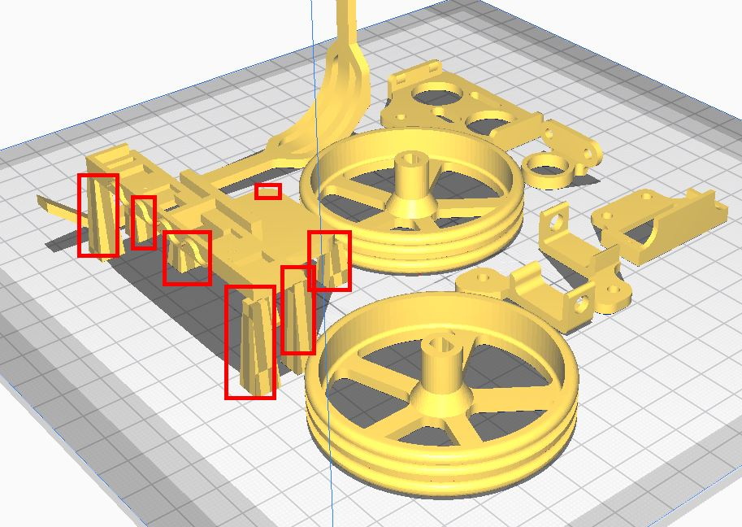

PARTES IMPRESAS
En la web https://tecnoloxia.org/mclon/estrutura/impresion-3d/ tenemos la última versión de los modelos 3D para descargarlos y los consejos para su impresión.
Nosotros utilizaremos (para descargar la última versión de estos ficheros ir a https://tecnoloxia.org/mclon/estrutura/impresion-3d/):
- El Chasis: Chasis_mClon_v2.stl
- El soporte para ultrasonidos, que utilizaremos el simétrico, pues hay HC-SR04 que tienen el condensador de cuarzo arriba y otros abajo: ultrasonico_simetrico.stl
- Ruedas, hay con muchos diseños, muy bien conseguidos, nosotros nos hemos decantado por uno sencillo Roda_5radiosFC.stl
- Soporte zumbador ZumbadorSoporte
- Brazo robótico con sorporte para el servo ServoBrazo.stl
- El led RGB el derecho RGB-der.stl y el izquierdo RGB-esq.stl
ATENCIÓN: EXCEPCIÓN
El soporte de sensor de línea y bola loca, no vamos a utilizar el que propone, pues hemos observado (al menos con nuestros sensores de siguelíneas) que NO detectaban bien las líneas negras y blancas pues estaban los sensores muy cerca del suelo, por lo que hemos cambiado el diseño original subiéndolo al máximo:

El fichero SIGUELINEAS-CATEDU.stl
Esta pieza necesita soportes para su correcta impresión :


mClon por Adapdato de https://tecnoloxia.org/mclon bajo licencia Creative Commons Reconocimiento-CompartirIgual 4.0 Internacional License.